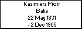
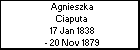
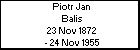
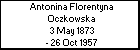
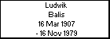

l i n k s
Children with:
Maria Stanislawa Boryczko
Siblings:
Stefan Ludwik Balis
Jan Piotr Balis
Andrzej Marcin Balis
Franciszek Jozef Balis
Piotr Balis
Agnieszka Balis
Children:
Maria Balis
Irena Balis
Alicja Balis
Ludwik Balis
Born: 16 Mar 1907
Married 23 Jul 1939 to
Maria Stanislawa Boryczko
Died: 16 Nov 1979
Generated by
GreatFamily 1.1 - FREEWARE